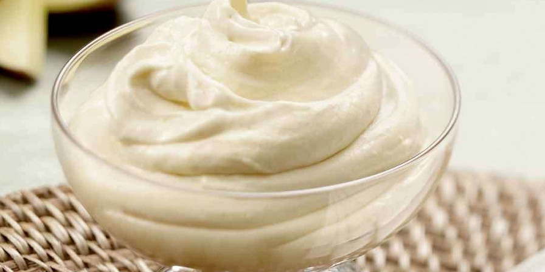

09 de Março de 2024 às 17:08
Musse de Cupuaçu
Preparo: 30 minutos
Rendimento: 10 porções
Categoria: Sobremesas
Por: Cley
Ingredientes
2/3 Polpa de cupuaçu da fruta
1 caixa de leite condensado
3 caixas de creme de leite
2 barras de chocolate meio amargo
Farofa de Castanha
Modo de Preparo
No liquidificador bata a polpa de cupuaçu com a caixa de leite condensado e uma caixa de creme de leite até dar ponto de mouse
Coloque o Mousse em uma travessa de vidro
Em uma panela, derreta as duas barras de chocolate com as duas caixas de creme de leite restantes, mexendo constantemente.
Jogue a ganache de chocolate por cima do Musse
Leve ao congelador por cerca de 6hrs.
Antes de servir, espalhe a Farofa de Castanha gelada por cima do mouse.